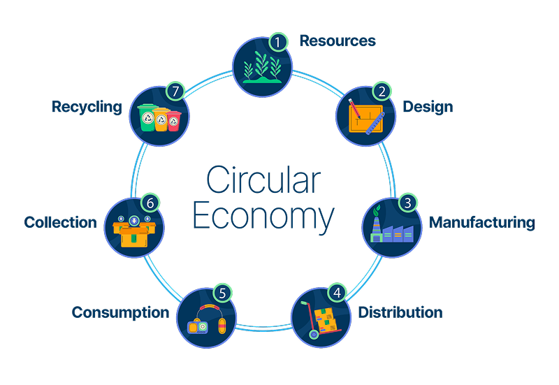

This project aims at creating a plastic circularity road map for the
cities of Nagpur and Nashik. We along with India Sanitation Coalition
are working on developing this road map which will be adopted by the
City's urban local bodies to develop a plan for achieving plastic
circularity.

Activities Performed:
- Orientation meetings with the key stakeholders and conducting multi stakeholder surveys.
- Receipt and analysis of secondary data
- Review of global and national best practices for roadmap development
- Preparation for policy notification and roadmap for the state
- Preparation for policy notification and roadmap for the state